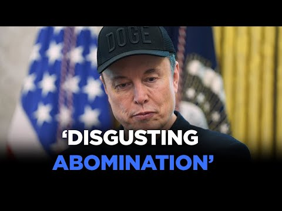

【埃隆·马斯克怒斥特朗普的“宏伟美丽法案” | 热门】
Summary: The split between Elon Musk and President Trump is widening as Musk criticizes Trump's sweeping legislative package, calling it a "disgusting abomination," despite their recent friendly farewell.
摘要： 埃隆·马斯克与特朗普总统的分歧正在加深，马斯克批评特朗普的全面立法方案，称其为“令人作呕的恶行”，尽管他们最近友好告别。

⏱️ Estimated Reading Time: 2 min
The split between Elon Musk and President Trump appears to be deepening.
埃隆·马斯克与特朗普总统之间的分歧似乎正在加深。
Musk taken to social media today, blasting the sweeping legislative package that Trump is trying to usher through Congress.
马斯克今天在社交媒体上猛烈抨击特朗普试图推动国会通过的全面立法方案。
In a post on X, Musk wrote, "I'm sorry, but I just can't stand it anymore.
马斯克在X上发帖写道：“很抱歉，但我实在无法再忍受了。
This massive, outrageous, pork-filled congressional spending bill is a disgusting abomination.
这项庞大、离谱、充满政治分肥的国会支出法案是一种令人作呕的恶行。
Shame on those who voted for it.
投票支持它的人真可耻。
You know you did wrong.
你们知道自己做错了。
You know it."
你们心知肚明。”
It comes a week after Musk left the White House to return to his private companies.
此前一周，马斯克离开白宫，重返他的私营公司。
During a joint press conference in the Oval Office on Friday, Trump and Musk portrayed a friendly farewell and a political relationship that would continue.
周五，特朗普和马斯克在椭圆形办公室举行的联合新闻发布会上表现出友好的告别姿态，并表示政治关系将继续。
But Musk has been increasingly critical of Trump's signature legislation, being called the big beautiful bill.
但马斯克对特朗普的标志性立法——“宏伟美丽法案”的批评越来越多。
It includes tax cuts, increased military and border security spending, as well as cuts to Medicaid.
该法案包括减税、增加军事和边境安全支出，以及削减医疗补助。
Some fiscal conservatives have been skeptical of the legislation over its spending levels and impact on the national debt.
一些财政保守派对该法案的支出水平及其对国家债务的影响持怀疑态度。
White House press secretary Caroline Levit was asked about the growing split between Trump and Musk during her White House press briefing this afternoon.
白宫新闻秘书卡罗琳·莱维特在今天下午的白宫新闻发布会上被问及特朗普与马斯克之间日益加深的分歧。
Look, the president already knows where Elon Musk stood on this bill.
听着，总统已经知道埃隆·马斯克对该法案的立场。
It doesn't change the president's opinion.
这不会改变总统的看法。
This is one big beautiful bill and he's sticking to it.
这是一项宏伟美丽的法案，他坚持支持它。
A falling out between the president and the richest man in the world could reverberate across national politics.
总统与全球首富之间的不和可能会在全国政治中产生反响。
Musk spent more than $250 million on Trump's 2024 presidential campaign, and his deep pockets have the potential to have a big impact on next year's midterm elections.
马斯克为特朗普2024年总统竞选投入了超过2.5亿美元，他的雄厚财力可能对明年的中期选举产生重大影响。